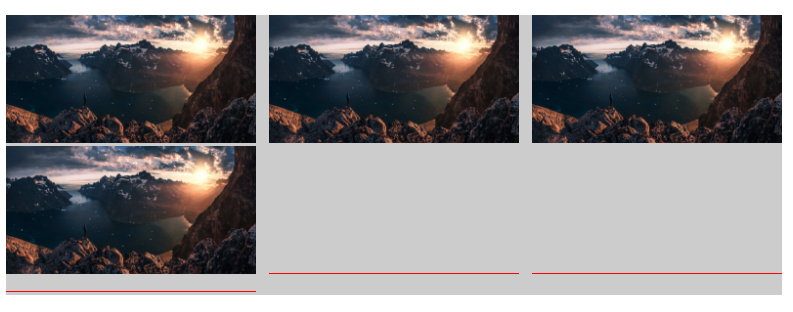
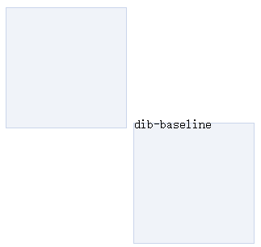
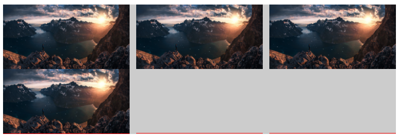

慕课网---深入理解vertical-align总结
看了张鑫旭在慕课网关于vertical-align的讲解，感觉讲的挺深，所以总结了一下 vertical-align的百分比值相对于line-height计算 IE6/7下line-height不支持小数
vertical-align起作用的前提
该属性应用于inline水平或者table-cell元素
inline水平
inline:img,span,strong,em等 inline-block:input,button（ie8+，ie6/7会把inline-block当作inline）
table-cell元素
td 所以默认情况下支持vertical-align的有：图片，按钮，文字，单元格
抛出一个问题
想实现图片的垂直居中
|
|
|
|
利用vertical-align：middle实现垂直居中，但是这里并没有按照我们想要的去做，解决办法：
1.给父元素
添加line-height的值为
的高度（ie7+都可以实现）
|
|
2.给父元素
添加display:table-cell
table-cell元素的vertical-align只会作用于自身，里面的子元素设置不起作用
|
|
vertical-align与line-height
利用text-align:justify任意数目列表两端对齐效果
|
|
|
|

运行后红色虚线表示i标签的位置 设置容器，p的行高为0
|
|
则出现如下情况：

为什么会出现这样的现象？
首先看一个东西 从CSS2的可视化格式模型文档中看到： ‘inline-block’的基线是正常流中最后一个line box的基线，除非，这个line box里面既没有line boxes或者本身‘overflow’属性的计算值而不是‘visible’，这种情况下基线是margin第边缘 举例说明：
|
|

文档解释了该现象，因为前面的盒子没有任何字符，此时它的基线就是它的底边缘，后面的盒子有文字，所以该盒子的基线就是文字的基线，二者基线对齐，现成如此效果。 如果把第二个盒子line-height:0，此时文字基线的位置，就是文字的垂直中心，所以：

所以，以上情况下面那些空白，是由于本身后面两个图片是没有的，所以可以当作是空白字符（空格），即后面两个<i>是有字符的，而第一个<i>是没有字符的，所以和上面的那个例子一样，默认基线对齐，所以，会导致出现小的空隙（其本质和图2一样），要消除这个空隙，需要给i都添加空白字符（ 或者直接改变对齐方式，vertical-align：top / bottom）即可，而这个line-height：0可以不添加。
要消除需要给p标签（容器）设置：
|
|
之后运行结果：

vertical-align线性属性值
1.vertical-align:bottom（top与之差不多）
定义
- inline / inline-block元素：元素底部和整行底部对齐。
- table-cell元素：单元格底padding边缘和表格行的底部对齐
2.vertical-align:middle
定义
- inline / inline-block元素：元素的垂直中心点和父元素基线上1/2 x-height处对齐
- table - cell元素：单元格填充盒子相对于外卖的表格行居中对齐
利用vertical-align：middle所实现的是近似垂直居中
为什么是近似呢？答案就在于： inline / inline-block元素：元素的垂直中心点和父元素基线上1/2 x-height处对齐 父元素基线上1/2 x-height处其实就是用line-height撑开后字符水平中心 字符所在的水平中心线和经过line-height撑开后的水平中心线（vertical-algin：middle的水平中心线）不是一个中心线（具体演示看[4-1 vertical-align线性属性值]http://www.imooc.com/video/10403）因为字符，本身有个下沉的特性
那么如何实现完全垂直居中？
给父元素设置
|
|
这样元素的垂直中心点和父元素基线上1/2 x-height处就完全重合了
但是这样会出现问题，如果我们在父级元素中有文字，那么设置font-size：0会导致文字无法显示，实现完全垂直居中的另一种方法是给图片（img）后面添加一个span,span设置为vertical-align：middle
|
|
vertical-align文本类属性值
定义：
- vertical-align :text-top 盒子的顶部和父级content area的顶部对齐
- vertical-align：text-bottom
盒子的底部和父级content area的底部对齐
解释：
content area就是只与父级font-size的大小有关，与行高，以及后面是否有inline-block元素的没有任何关系，但是vertical-align：middle / top / bottom都会被后面的inline-block水平元素影响。
用处：
一般用于表情图片（或原始尺寸背景图标）与文字的对齐效果
输入理解vertical-align上标下标类—sub / super
HTML中有原生的上下标标签，分别为：<sup> ,<sub>。利用原生的HTML获得的上下标文字大小是父元素75%左右。
定义：
1.vertical-align：super 提高盒子的基线到父级合适的上标基线位置。 2.vertical-align：sub 降低盒子的基线到父级合适的下标基线位置。 这里的‘合适的上（下）标基线位置’，哪里合适，说不清
vertical-align前后不一的作用机制与示例
vertical-align所有的表现只当前元素和父级有关，前后并没有直接影响 1.实现小图标和文字的对齐 使用vertical-align负值，虽然图片文字对齐可以使用浮动实现的，但是尽量少用浮动，因为会破坏布局，使用vertical-align负值可以实现居中 2.不定尺寸图片或多行文字的垂直居中,具体实现步骤如下： a.大小不固定的图片垂直居中
- 主体元素inline-block化；
- 0宽度100%高度辅助元素；
- vertical-align:middle；
|
|
|
|
实现垂直居中，效果如下：

b.大小不固定的文字垂直居中：
|
|
|
|